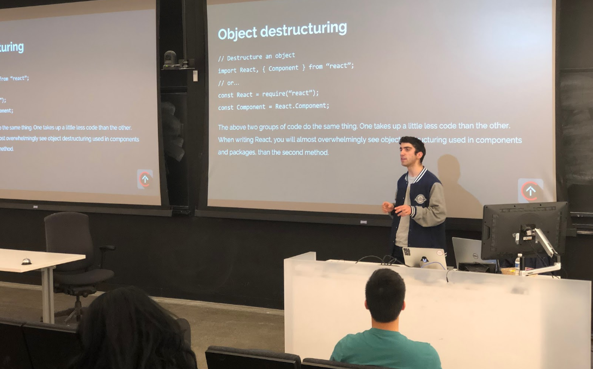

<div class="container bg-body p-5">
    <div class="row g-5">
        <div class="col-md-7">
            <div class="owl-carousel portfolio_owl_slider">
                <div>
                    
                </div>
            </div>
        </div>
        <div class="col-md-5">
            <h2 class="fs-3 mb-5">Teaching Web Development</h2>
            <div class="portfolio-content mb-5">
                <p class="text-secondary">Okay, not a side project per se since I got course credit for teaching
                    this, but it's a rare moment where I have a great image so I thought I'd include it! I was the lead
                    course instructor for a course we taught to Cornell students about full stack web development. We
                    taught about React, NodeJS, and Firebase. I worked alongside the other instructors in creating
                    slides and assignments as well as holding office hours. (Note that the course website below was made
                    by the instructors after me.)
                </p>
                <!--                <p class="text-secondary"></p>-->
            </div>
            <ul class="list-group list-group-flush">
                <li class="list-group-item">
                    <span class="fw-bold">Course Content: </span><a href="https://webdev.cornelldti.org/"
                                                                    target="_blank">Open Sourced Here</a>
                </li>
                <!--                <li class="list-group-item">-->
                <!--                    <span class="fw-bold">Stack: </span>jQuery, Flask, and Firebase.-->
                <!--                </li>-->
            </ul>
        </div>
    </div>
</div>